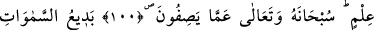

ALLAH’A ÇOCUK İSNAD
EDENLERİN REDDİ
100. Cinleri Allah’a ortak koştular. Oysa ki onları da Allah yaratmıştı. Bilgisizce
O’na oğullar ve kızlar yakıştırdılar. Hâşâ! O, onların ileri sürdüğü vasıflardan uzak
ve yücedir.
101. O, göklerin ve yerin eşsiz yaratıcısıdır. O’nun eşi olmadığı halde nasıl çocuğu
olabilir! Her şeyi O yaratmıştır ve her şeyi hakkıyla bilen O’dur.
102. İşte Rabbiniz Allah O’dur. O’ndan başka tanrı yoktur. O, her şeyin
yaratıcısıdır. Öyle ise O’na kulluk edin, O her şeye vekildir (güvenilip dayanılacak
tek varlık O’dur).
“Cinleri Allah’a ortak koştular.”
Kâşifî âyetin nüzûlü hakkında şöyle der: Bu konuda en doğru olan, âyetin zındıklar
yani Seneviyye de denilen Mecusiler hakkında indirilmiş olmasıdır. Onlara göre Allah
Teâlâ ve Şeytan iki kardeştir. Allah, insanların, canlıların, hayvanların ve her türlü
hayrın yaratıcısıdır. O’na “Yezdan” derler. Şeytan ise yırtıcı hayvanların, yılanların,
akreplerin ve her türlü şerrin yaratıcısıdır. Ona da “Ehrimen” derler. Onların durumu şu
âyete uygun düşer: “Onlar Allah ile cinler arasında bir nesep uydurdular.” (es-
Sâffât, 37/158). İblis de cinlerdendir.
Âyetin mânâsı şöyledir: Onlar bâtıl inançlarına göre cinleri Allah’ın ortakları kıldılar.
“Oysa onları Allah yarattı.” Hal şu ki onlar muhakkak kendilerini cinlerin değil de
Allah’ın yarattığını; yaratanın, yaratmayanla bir olmadığını bilirler.
“Onları” zamiri kâfirlere râcidir. Cinlere âid olması da mümkündür. Bu durumda
mânâ: “Cinleri de Allah Teâlâ yarattığı halde O’nun yarattığı cinleri nasıl Allah’a ortak
koşarlar?” şeklinde olur.
“Hiçbir bilgiye dayanmadan” söylediklerinin doğru mu, yanlış mı olduğunu ve işin
aslını bilmeden; körü körüne, cahilce, düşünüp taşınmadan “Allah’a oğullar ve kızlar
isnâd ettiler.” uydurdular ve iftira ettiler. Yahudiler: “Uzeyr, Allah’ın oğludur.”,